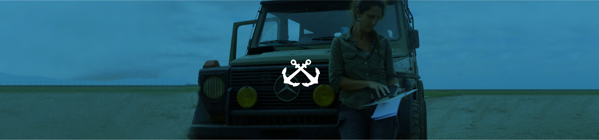

Melina Devercelli
Vive en San José del Rincón, a unos 10 km. de Santa Fe, desde allí encabeza uno de los primeros 4 Proyectos Interinstitucionales en Temas Estratégicos (Pites) que financia el Ministerio de Ciencia, Tecnología e Innovación de la Nación (MinCyT). Un proyecto que estudiará el Socioecosistema fluvial Paraná-Paraguay desde una mirada interdisciplinaria y que convocó a 23 instituciones científicas y académicas a trabajar colaborativamente para dichos fines, entre ellas el CONICET, el INA, la CONAE y el Instituto Universitario de Seguridad Marítima (IUSM) de la Prefectura Naval Argentina.
Ciencia al Sur y microorganismos en el horizonte
Como la mayoría de las mujeres que trabajan en el campo de la ciencia, Melina cumple múltiples funciones, maneja diversos roles y posee una gran capacidad de gestión. Es madre de 2 hijos, compañera de un periodista, Doctora en Ciencias Biológicas, investigadora adjunta del CONICET y trabaja en el Instituto Nacional de Limnología (INALI, CONICET-UNL) donde también integra el consejo asesor.
Se categoriza a sí misma dentro de la generación de mujeres “multitasking”, que combinan su vida profesional con las tareas de cuidado (hijos, casa, familia), mujeres pulpo que se las ingenian para disfrutar de la familia y que tienen poco de tiempo libre.
Es viernes por la tarde, después de haber participado toda la semana en un Congreso, Melina se hace el espacio para contarnos un poco de su vida y sus afluentes. Con una sonrisa siempre a mano, hace que lo complejo suene simple y nos acerca a lo distante que puede parecer la ecología microbiana.
Melina se recibió de Licenciada en Biodiversidad, luego se graduó como profesora de Biología en el año 2003 y emprendió su carrera como becaria en el CONICET para luego doctorarse en Ciencias Biológicas y convertirse en investigadora de dicho organismo en el 2011. En su tesis doctoral estudió el fitoplancton del río Salado en el tramo que desemboca en el Paraná, su hidrología y cómo modifican su diversidad fenómenos hidro climáticos como El Niño y La Niña.
Su especialidad es el estudio de la ecología del fitoplancton fluvial, es decir para el común de las personas, el análisis de los microorganismos que se encuentran en el agua del río. Ella sostiene que “para entender lo que sucede en el ambiente acuático y los procesos hidrológicos, es muy importante estudiar el tipo de microorganismos que viven allí porque, pese a ser diminutos, son centinelas que nos sirven para diagnosticar el estado de los ecosistemas habitan”.
“Los microorganismos me permiten interpretar los procesos ecológicos y el funcionamiento de los sistemas acuáticos. Desde mis inicios trabajo con fitoplancton, y actualmente analizo la diversidad y funciones microbianas (bacterias y protistas) con técnicas de secuenciación masiva de genes gracias a que trabajamos en equipo en el laboratorio con Paula Huber, Victoria Accattatis y Sebastián Metz, e investigadores de otras instituciones” continuó Melina.
Desarrollo estratégico en el horizonte global
Uno de los proyectos de investigación más importantes que dirige Melina Devercelli es el denominado “Ecosistema fluvial Paraná-Paraguay: Estudio Argentino en el escenario de los cambios globales”. El propósito de este tipo de iniciativas que se enmarcan en los PITES, establecido por las bases del MinCyT, consiste en sumar capacidades científicas y tecnológicas complementarias de distintas instituciones, a través de la ejecución de proyectos de investigación, desarrollo e innovación en forma asociativa y multidisciplinaria.
- ¿Por qué es importante estudiar el Paraná - Paraguay?
MD: El río Paraná tiene una relevancia estratégica para nuestro país y la región, es el segundo río más importante de Sudamérica con más de 3.900 kilómetros de largo. Por eso, este proyecto nos da la posibilidad de analizarlo integralmente, en toda su longitud dentro de Argentina, desde distintas miradas y federalmente.
Los ríos Paraná y Paraguay forman parte de la Cuenca del Plata, como ya dije, la segunda más grande de Sudamérica, son únicos por su extensión y por la biodiversidad que albergan. Sus márgenes son habitados por millones de personas y tienen gran importancia estratégica para la región en términos económicos, ambientales y socioculturales. Allí se produce más del 70% del PBI de Argentina, son fuente de agua dulce y alimento, reguladores climáticos, reservorios de flora y fauna y espacios donde se despliega una gran diversidad de identidades y culturas.
Como ríos aluviales están formados por el cauce principal y una gran red de arroyos, lagunas, tierra y demás ambientes que se conectan entre sí gracias a las crecientes y bajantes del agua. Como parte de su dinámica natural, atraviesan períodos de inundaciones y sequías extremas, aspecto a tener en cuenta para pensar una planificación territorial en convivencia con el río.
- ¿Cómo se aborda su estudio?
MD: Un sistema tan complejo como el sistema fluvial no se puede abordar desde una sola problemática o perspectiva, hay que abordarlo integralmente. En este proyecto combinamos distintas disciplinas y herramientas para su estudio como la mirada satelital junto con aspectos climatológicos, hidrológicos, sedimentológicos, uso y cobertura del suelo, aspectos ecológicos, biológicos, bioinformáticos, computacionales, socioambientales, antropológicos y etnográficos. Estas dimensiones confluyen para avanzar en el entendimiento de estos grandes sistemas fluviales. Además, el proyecto integra científicos y expertos de Misiones, Corrientes, Entre Ríos, Chaco, Santa Fe y Buenos Aires, todas las provincias por las que va bajando el río hasta su desembocadura en el mar.
Los ríos Paraná y Paraguay forman parte de la Cuenca del Plata, como ya dije, la segunda más grande de Sudamérica, son únicos por su extensión y por la biodiversidad que albergan. Sus márgenes son habitados por millones de personas y tienen gran importancia estratégica para la región en términos económicos, ambientales y socioculturales. Allí se produce más del 70% del PBI de Argentina, son fuente de agua dulce y alimento, reguladores climáticos, reservorios de flora y fauna y espacios donde se despliega una gran diversidad de identidades y culturas.
Somos 23 instituciones del sistema nacional de Ciencia y Tecnología del país, que a través de este tipo de proyectos buscamos formas de trabajar articuladamente, entre ellas el Instituto Universitario de Seguridad Marítima (IUSM). Desde el Instituto se busca fortalecer el diálogo con gobiernos locales y nacionales, con los municipios y las personas. Los proyectos del PITES generan una herramienta nueva para el sistema científico que pone a trabajar en conjunto a distintas instituciones y diversos expertos.
.jpeg)
- Este año se registró una bajante muy significativa del Río Paraná. ¿Qué reflexión te merece esta situación?
MD: Por segundo año consecutivo los ríos están atravesando una de las mayores bajantes del siglo, esta situación se agudizará en los próximos meses ya que los pronósticos indican que las lluvias en la cuenca alta de Brasil aumentarán el caudal del Paraná recién entrada la primavera de 2022.
El incremento en la frecuencia e intensidad de las grandes inundaciones y sequías pronosticadas para las próximas décadas trae la necesidad de construir estrategias de adaptación a eventos climáticos extremos. Este es uno de los aspectos que el nuevo proyecto que defina Argentina debería considerar.
- Entonces, ¿dónde centrar la mirada?
MD: Bueno, no basta una sola mirada, como ya dije, el proyecto busca comprender el funcionamiento de los ríos Paraná y Paraguay mediante una perspectiva integrada de sus dimensiones sociales y ambientales. Su finalidad es diseñar programas de monitoreo y propuestas de acción que contribuyan a la sostenibilidad del socioecosistema en un mundo en cambio.

En términos generales, queremos pensar lo social, lo ambiental y lo económico, el uso del río en su conjunto. Para esto, analizamos la calidad del agua, la diversidad microbiana y de invertebrados, estudiamos el acervo genético de nuestros ríos, la dispersión de especies invasoras, la variabilidad climática en relación a cambios hidrológicos y biológicos, y generamos una alerta temprana de cianobacterias, mapas de riesgo hídrico, y efectos del dragado vinculados con prácticas como las de “Hidrovía S.A.”. Pero decidimos empezar por ejes relacionados con la bajante porque, de alguna manera, el objeto de estudio nos moldea.
Con este proyecto pretendemos aportar conocimientos, herramientas y soluciones que contribuyan a la toma de decisiones sobre la gestión sostenible, en términos socioambientales, de los sistemas fluviales y brindar elementos técnicos para el diseño de políticas públicas de carácter federal.
- ¿Qué son las floraciones de cianobacterias?
MD: Las cianobacterias son organismos microscópicos como las bacterias pero que realizan fotosíntesis como las plantas y contribuyen a generar oxígeno, reciclar nutrientes y captar carbono. Crecen rápidamente y pueden formar espumas de color verde esmeralda en la orilla del agua que se las denomina como «floración». El problema de las mismas es que pueden producir toxinas muy potentes. Por eso, es necesario generar alertas tempranas que nos permitan actuar a tiempo, y trabajar con las poblaciones que hacen uso del agua, ya sea recreativo, para consumo humano o de animales, teniendo como objetivo que no se presente un riesgo para la salud de la
población.
- ¿Y el horizonte?
MD: De alguna manera, lo que buscamos es no trabajar en nuestros escritorios, separados de las problemáticas sino, triangular entre los gobiernos, los colectivos sociales que viven asociados al río y las científicas y científicos que trabajan las distintas temáticas.
Queremos generar una forma de trabajo multi y transdisciplinar entre instituciones del sistema científico-tecnológico nacional que colabore con la integración del mismo y en el diálogo con colectivos sociales locales. En ese sentido, y en una dimensión más amplia, apostamos a construir un horizonte de sentidos compartidos por las y los participantes, donde se integren las necesidades e intereses relevantes para los diversos sectores e instituciones involucradas en el proyecto.
Río arriba: un proyecto binacional
En la cuenca del Paraná-Paraguay viven cerca de 75 millones de personas (90 millones en la Cuenca del Plata). Abarca la zona más urbanizada de Sudamérica y su población crece a razón de aproximadamente un millón de habitantes por año. En ella se encuentran varias de las ciudades más pobladas de la región: São Paulo, Buenos Aires, Curitiba, Campinas y Rosario.
Sin lugar a dudas, ante las inminentes amenazas ambientales asociadas al cambio climático, mantener la salud de los ecosistemas de agua dulce es uno de los mayores desafíos que enfrenta tanto la comunidad científica nacional como la regional.
Por ello, a través de un proyecto financiado por afamada sociedad National Geographic, Melina Devercelli encabeza otra investigación junto con una investigadora del CONICET y Doctora en Biología Molecular, Paula Huber, que aborda el estudio del sistema fluvial Paraná-Paraguay pero desde la perspectiva binacional, Argentina-Brasil. En este proyecto también participan el Instituto Universitario de Seguridad Marítima (IUSM) y la Prefectura Naval Argentina.
Como explica Devercelli “hace falta una mirada integradora de sistemas complejos de agua dulce. Con los rápidos cambios derivados de las actividades humanas y el cambio climático, se vuelve urgente desarrollar nuevas herramientas analíticas para comprender mejor el impacto en los ecosistemas y la biodiversidad”.
En este proyecto llamado Paraná Profundo (Deep Paraná), continuó Melina, “estudiaremos por primera vez el microbioma del río utilizando técnicas metagenómicas y herramientas de inteligencia artificial. Cada microbioma representa un conjunto de datos genómicos de alta dimensión cuyo análisis es un desafío. Desarrollos recientes proponen el uso de modelos de aprendizaje profundo para extraer la información. Estos enfoques se han utilizado para la predicción de enfermedades del microbioma humano y tienen un incipiente desarrollo en agua dulce. La información que brindan estos análisis metagenómicos, no solo nos permite conocer con una enorme resolución la diversidad microbiana, sino también entender las funciones que están desempeñando, es decir, conocer las rutas metabólicas del río”.
“Es muy interesante poder realizar un estudio binacional del Paraná ya que los ríos forman parte de cuencas interjurisdiccionales y necesitamos estudiarlos más allá de sus fronteras. Estos estudios solo son posibles de realizar por el trabajo colaborativo entre investigadores de distintas áreas que forman parte del equipo” concluyó Melina.

#MujeresEnLaCiencia
Para Melina Devercelli, esta mujer “multitasking” y sin tiempos, la investigación científica es, sin lugar a dudas, su elección de vida: investigar para mejorar las condiciones materiales de existencia, para crear herramientas propias, adecuadas a las necesidades y características de nuestros recursos naturales desde una perspectiva nacional y regional.
Consciente de las problemáticas que deben enfrentar las mujeres en un mundo desigual y atravesada por la realidad de aquellas que se dedican a la ciencia en particular, Melina sostiene una mirada crítica sobre la aún “abismal inequidad de género existente en la toma de decisiones del mundo y de las ciencias”.
Devercelli reconoce que los tiempos han cambiado, pero sostiene que “hay muchas cosas que transformar en las instituciones científicas porque la desigualdad de condiciones es una realidad, fundamentalmente cuando se trata de lo económico, la carrera científica y la toma de decisiones. Hay un gran número de mujeres científicas investigadoras, cada vez es mayor, pero los ámbitos de decisión siguen estando ocupados mayoritariamente por varones”.
Melina espera que en el futuro las mujeres alcancen la equidad de género y sonríe al mencionar que, pocos días atrás, mientras se encontraba diseñando el trabajo de campo del proyecto Paraná Profundo, se dio cuenta que todas las personas presentes eran mujeres, 14 investigadoras de diversas provincias ajustando protocolos de análisis para llevar adelante la expedición por el Paraná. Quizás el futuro esté llegando.